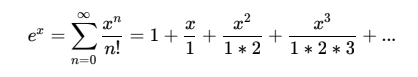

Exponential functions are of great importance in mathematics, physics and engineering. One of the most important functions is . It has the very important property that it is the only function that its derivative is the same as itself. So any process where the rate of change of a quantity is proportional to the quantity itself will be described by exponential functions. Finance, population growth, oscillators all have these characteristics. When we want to model these processes in a computer we have a problem. is irrational and that means that we have to calculate approximate values. Specially our digital computers only know how to solve simple operations... so how can we calculate the value of complex equations? The answer is to simplify the functions into operations a computer can manage without any problem. sums, multiplications and divisions are simple enough. Let’s use the following formula to estimate the value of e up to 9 decimals only using multiplications and sums.
As you can see is only raised to integer powers (i.e. multiplications) and stands for factorial, which is the integer multiplication up to n (note that 0! and 1! is equal to 1).
Build a program that given and would approximate using the identity above. That is only using sums, multiplications and divisions (exponentials are not allowed by definition). You can use any programing language you like (it could be excel if you want).
What should be the value of n in order to approximate e1 up to 9 decimals?